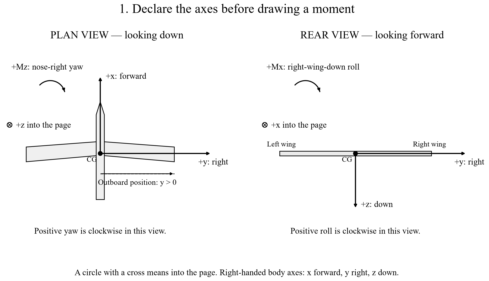

MIE 446 · Aerospace Structures · Homework 2A · Due Tuesday, October 20, 2026 (Canvas shows the time)
Flight-control forces, moments and load paths · Parts 1 and 3
Name: Team:
The question: When a control device changes an aerodynamic force, which aircraft moments change, and where does the structure receive the load?
Homework 2 is submitted in two parts. HW 2A (this handout) reads measured roll and yaw data from Lilienthal’s experimental monoplane and practices the moment geometry \(\mathbf M=\mathbf r\times\mathbf F\). HW 2B (due November 5) uses both skills to integrate spanwise loads, mix elevon commands and trace local structural loads. Part 3 comes before Part 2 because its sign conventions are used throughout HW 2B. Work in the order predict → sketch → compute → cross-check → explain.
| Part | Task | Points |
|---|---|---|
| 1 | Read historical evidence; compare control mechanisms | 15 |
| 3 | Calculate the moment of a side force at three locations | 20 |
| HW 2A total (HW 2B carries the remaining 65 points) | 35 |
The starter uses standard MATLAB functions and no add-on toolbox. NaN means “unfinished”; a file that runs with NaN entries is not a completed submission. The lecture notebook uses Python; your assessed computation uses MATLAB and Excel.
Preparation · Read before calculating any moment
Notebook route: find 2D. Aircraft rotations, 2E. Center of gravity, then 7A-3b. A vertical vane is not automatically a pure-yaw device. Use Ctrl+F (Command+F on Mac) to find the section title. Read Figure 7A-3b-1 before the equations.

Lecture 1, Figure 7A-3b-1. Aircraft right means the pilot’s right looking forward. An axis drawn into the page is not absent.
Use a right-handed body-axis system: +x forward, +y right, +z down. Positive \(M_x\) tends to lower the right wing; positive \(M_y\) tends to raise the nose; positive \(M_z\) tends to turn the nose right. A moment tendency does not by itself predict the complete flight trajectory.
The coordinates in \(\mathbf r\) run from the CG to the force application point. Use metres and newtons, giving N·m. A positive coordinate locates a point; it is not automatically the perpendicular lever arm of every force component.
A force \(\mathbf F=(0,0,3)\) N acts at \(\mathbf r=(0.20,0,0)\) m. Then \(M_x=0\), \(M_y=-(0.20)(3)=-0.60\) N·m, and \(M_z=0\). Sketch why a downward force ahead of the CG produces a nose-down tendency.
r_demo = [0.20, 0, 0]; % row vector, m F_demo = [0, 0, 3]; % row vector, N M_demo = cross(r_demo,F_demo); % returns [Mx My Mz]
cross(F_demo,r_demo) gives the opposite sign. Use the physical definition \(\mathbf r\times\mathbf F\), not whichever order produces the expected answer.
Part 1 · Historical evidence and modern control mechanisms · 15 points
Notebook route: 7A-3 (device names), 7A-3a (Lilienthal’s tail), 7A-3b (moments), and 7A-7–7A-13 (modern UAV examples). Open Raffel et al., “Flight Controls of Otto Lilienthal’s Experimental Monoplane from 1895”. Read the device description and Section II.C, Controllability; inspect Figures 11 and 12. You need not summarize the whole paper.
Keep these coefficients nondimensional; compare signs and trends, not sizes. Record the paper’s labels and axis convention; no conversion to N·m is required. The paper does not state the reference area and lengths behind \(c_l\) and \(c_n\), and the two figures use very different scales, so a larger \(c_n\) does not by itself mean a larger yawing than rolling moment.
Choose one of MQ-9 or X-48B and one of X-36, X-47B, or MAGMA from the notebook. Make a two-row table with: aircraft; visible tail/canard/winglet arrangement; one documented control mechanism; physical quantity it changes; and structure receiving the reaction. Cite the relevant notebook section and its linked source. If a photograph alone cannot establish a mechanism, state that limitation instead of guessing.
Submit for Part 1: one annotated figure; the six-row coefficient table with tolerances; a short coupling explanation; and the two-aircraft comparison. Aim for about one to two report pages.
Part 3 · Side-force geometry · 20 points
Notebook route: return to 7A-3b, especially Figure 7A-3b-3 — Same side force, different lines of action. The lecture’s numbers are different from the assessed values below.
Apply the same force \(\mathbf F=(0,2,0)\) N at each location relative to the CG:
| Case | x (m) | y (m) | z (m) | Before calculation |
|---|---|---|---|---|
| A | 0 | 0.35 | 0 | Does the force line pass through the CG? |
| B | −0.15 | 0.35 | +0.04 | Aft of and below the CG |
| C | −0.15 | 0.35 | −0.04 | Aft of and above the CG |
rCases are A/B/C. In the loop, rCases(j,:) selects the current row. Replace the TODO with cross(rCases(j,:),Fside). Compare all components against the hand calculation.| Cell | Component | Formula |
|---|---|---|
| H7 | \(M_x\) | =C7*G7-D7*F7 |
| I7 | \(M_y\) | =D7*E7-B7*G7 |
| J7 | \(M_z\) | =B7*F7-C7*E7 |
Answer in your own words: (i) Why is the outboard distance \(y=0.35\) m not sufficient by itself to create roll from this force? (ii) Which perpendicular arm controls roll and which controls yaw? (iii) Give one application point that produces nonzero yaw but zero roll for this same force. Verify your proposed point with cross.
Submit: the plan-view and rear-view sketches; a prediction table; the hand calculation for B; a three-case moment table checked in MATLAB and Excel; and the three geometric explanations. The zero-moment case still has a nonzero resultant force.
HW 2A submission · Check the reasoning and the files
Submit through Canvas your individually authored Surname_HW2A_Report.pdf, Surname_HW2A.m and Surname_HW2A.xlsx. Include the sketches, tables and explanations in the PDF so a reader can follow your reasoning without opening the software. Keep graded work out of the public repository.
| Part | Evidence required in your report | Points |
|---|---|---|
| 1 | Labeled hardware figure with source; six pairs of paper coefficients with reading tolerances and the test configuration; sign-based coupling explanation; two-aircraft comparison | 15 |
| 3 | Plan-view and rear-view sketches; predicted signs; hand calculation for Case B; three-case table checked in MATLAB and Excel; three geometric explanations | 20 |
End the report with three short lines: (i) your collaborators and one cross-check you performed independently (for example, a teammate’s independent reading of one Figure 11 row); (ii) tools used and, if any generative AI was used, what it contributed and how you verified it, or “No generative AI used”; (iii) your MATLAB and Excel versions. The one-slide brief, README, Engineering Judgment Record and reflection are submitted once, with HW 2B.
Q3_side_force.csv is saved in hw2a_outputs next to the script.